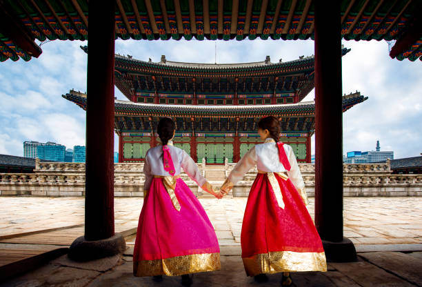
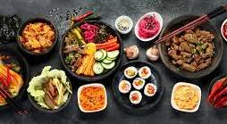

Traditional Hanbok
Hanbok, the traditional attire of the Korean people, is a testament to the nation's rich cultural heritage. Its elegant lines, vibrant colors, and intricate details tell a story of history, tradition, and evolving fashion.
- Jeogori: A loose-fitting jacket worn by both men and women.
- Chima: A full-length skirt worn by women.
- Baji: Loose-fitting trousers worn by men.
- Po: A long overcoat worn over the jeogori and baji.
- Durumagi: A quilted jacket worn in winter.
Key Components and Characteristics:
Korean Cuisine
Korean cuisine, a vibrant tapestry of flavors and textures, is a testament to the nation's rich culinary heritage. It's a harmonious blend of fresh, seasonal ingredients, bold seasonings, and time-honored cooking techniques.
Must-Try Dishes:
- Bibimbap: A colorful and satisfying dish of mixed rice with vegetables, meat, and a fried egg.
- Bulgogi: Marinated grilled beef, often served with lettuce wraps for a flavorful bite.
- Kimchi Jjigae: A hearty and spicy kimchi stew, perfect for a cold day.
- Tteokbokki: Spicy rice cakes, a popular street food favorite.
- Japchae: Glass noodle stir-fry with vegetables and meat.
Festivals
South Korea's vibrant culture is beautifully showcased through its diverse festivals. From the joyous celebrations of Seollal (Lunar New Year) and Chuseok (Korean Thanksgiving) to the unique Boryeong Mud Festival and the enchanting Lotus Lantern Festival, each event offers a glimpse into the country's traditions, history, and the warm hospitality of its people. Whether you're drawn to the lively atmosphere of a bustling festival or the serene beauty of a cultural celebration, South Korea has something to offer every visitor.